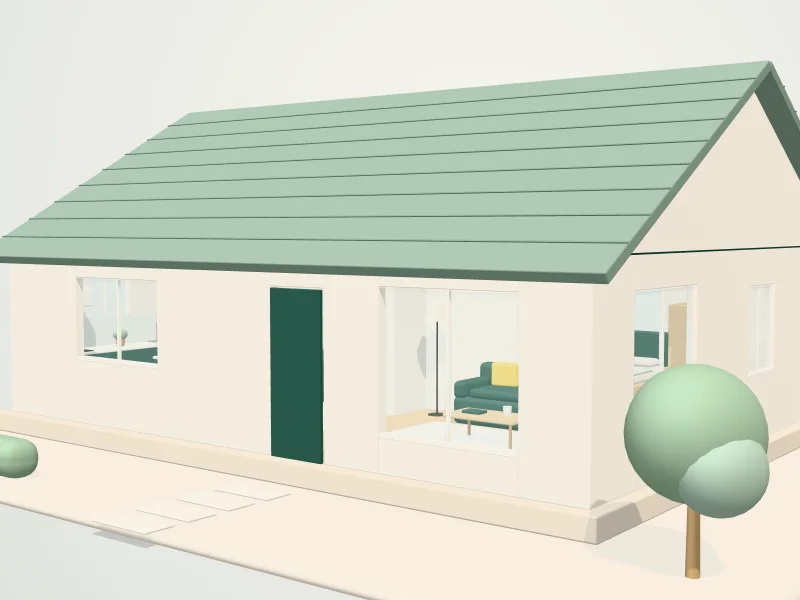

Service
Window cleaning in Guildford
Clean windows change how a whole room feels. We clean glass, frames and sills for homes and businesses across Guildford and the surrounding villages.

Illustration
Surrey weather leaves its mark on glass. We clean windows, frames and sills so more light gets in and the outside of your property looks cared for.
Add interior glass to any visit, or combine window cleaning with a regular or deep clean. When we quote, we will confirm access and exactly which windows we can reach.
The checklist
What is included
Our standard checklist for window cleaning. Add or remove tasks when you request a quote.
Every clean
- Glass cleaned and left streak-free
- Frames wiped down
- Sills cleaned
- Doors with glass panels included
On request
- Interior glass
- Conservatory glass, access permitting
- Combined with a regular or deep clean
Popular extras
- Interior windows
- Conservatory glass
- Patio doors
How it works
From quote to clean.
- 01
Tell us about the space
Two minutes on our quote form: your postcode, the type of clean and the size of the property.
- 02
Get a clear quote
We reply with a price and the checklist it covers, so you know exactly what is included before anything is booked.
- 03
Come home to clean
We clean to the agreed checklist. If anything is not right, tell us and we will put it right.
Questions
Window cleaning: your questions
Can you clean upstairs windows?
Access varies from property to property. Tell us about your home when you request a quote and we will confirm which windows we can safely clean.
Can I combine window cleaning with a house clean?
Yes. Many people add windows to a deep clean or an end of tenancy clean so everything is done in one visit.
How often should windows be cleaned?
Every four to eight weeks suits most homes, but it depends on your location and preferences. We are happy to clean as a one-off too.